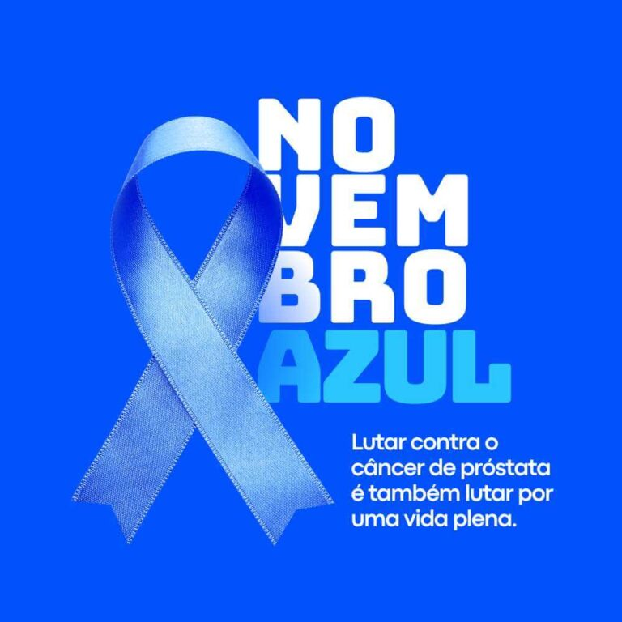
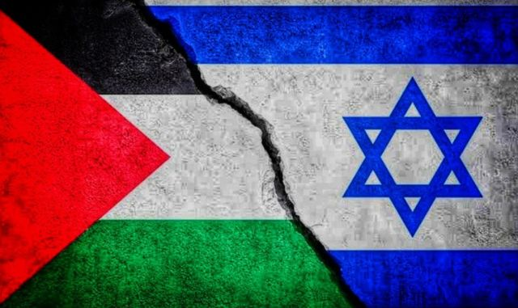
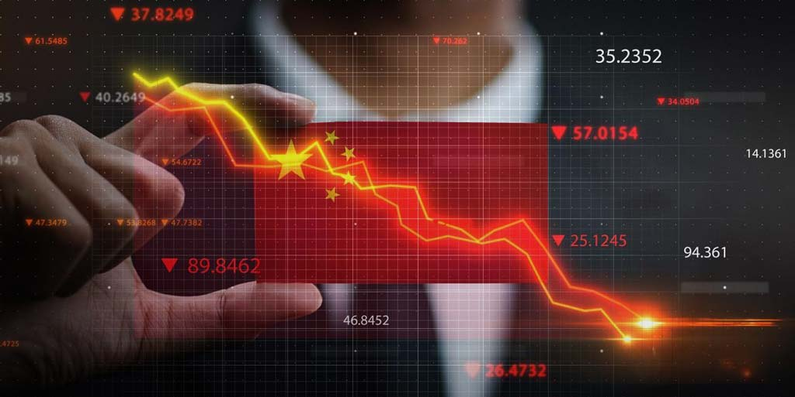
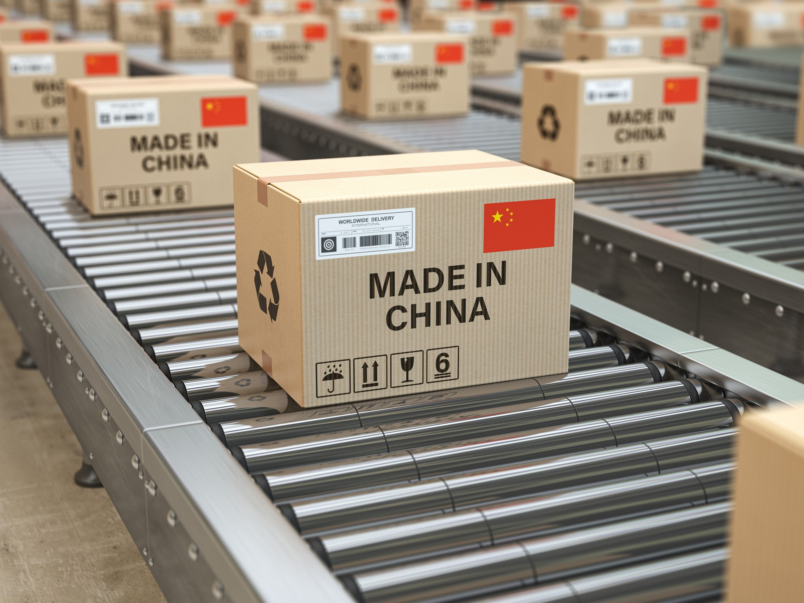
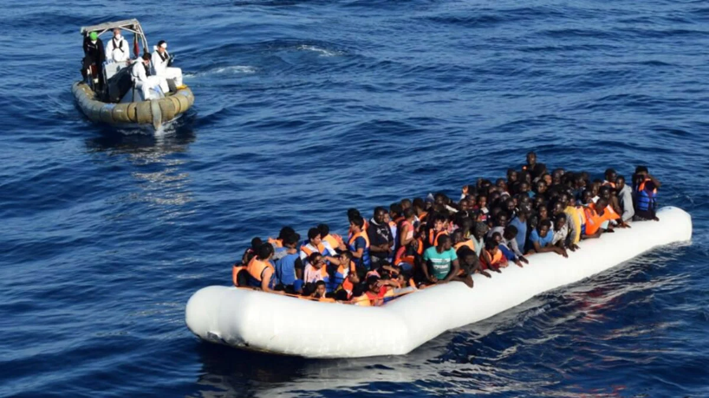
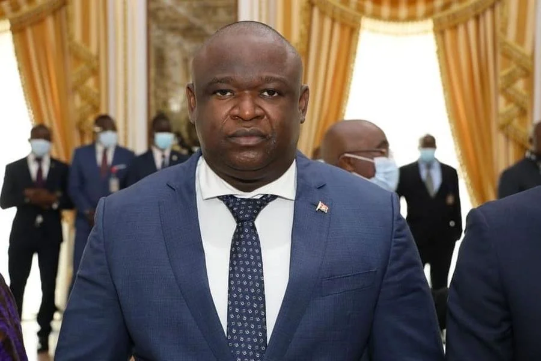
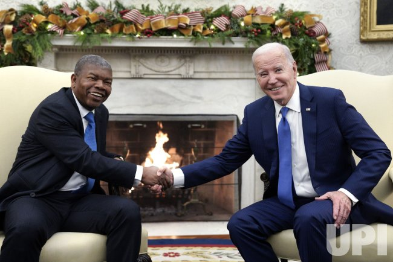
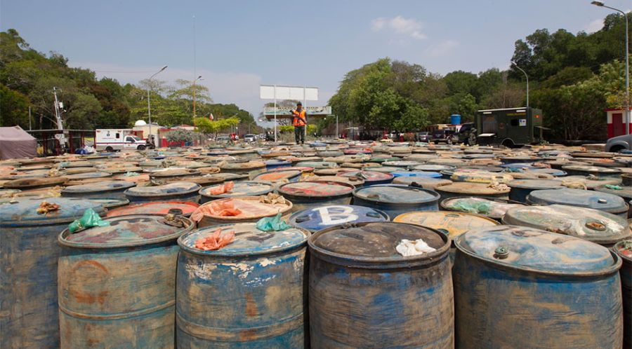
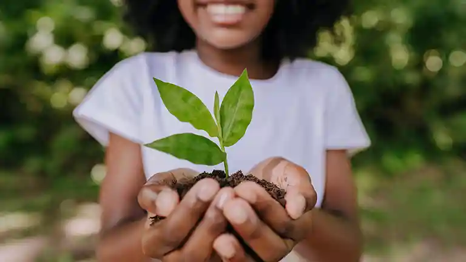

Celebrações Importantes
- Outubro Rosa
- Novembro Azul
- 11 de Novembro


Eleições nos EUA: Donald Trump venceu as eleições, conquistando novamente a presidência com o apoio de eleitores latinos, negros e de áreas rurais, e controle do Congresso. Este retorno à Casa Branca traz incertezas sobre políticas climáticas e direitos civis, além de intensificar a divisão política nos EUA.

Conflito no Oriente Médio: A guerra entre Israel e Hamas intensifica-se, com novas ofensivas na região de Gaza e aumentos de sanções e ataques aéreos, causando sérias preocupações humanitárias e diplomáticas globais. Além disso, o conflito se estendeu ao Líbano, onde recentes bombardeios aumentaram o número de vítimas.
Economia da China: A China está intensificando estímulos econômicos para alcançar seu crescimento anual, com foco em investimentos internos e infraestrutura. Isso reflete um esforço para manter a economia estável diante de desafios globais.
Exposição Internacional de Importação da China (CIIE): Em Xangai, o evento destaca a importância da China no comércio global. Empresas de mais de 160 países estão presentes, promovendo o país como um dos maiores mercados do mundo.
Aquecimento Global Intenso: De acordo com o programa Copernicus da União Europeia, 2024 está a caminho de ser o ano mais quente da história. Desde o início do ano, as temperaturas globais têm sido consistentemente elevadas, com julho registrando dias de calor recorde. Esse calor extremo está intensificando eventos climáticos como furacões, incêndios florestais e enchentes em várias regiões, incluindo o Mediterrâneo e partes da Ásia.

Avanços em Inteligência Artificial na Saúde: Em lugares como o Reino Unido, a tecnologia de IA está sendo usada para melhorar diagnósticos, como no caso de fraturas, visando reduzir erros médicos e acelerar o atendimento. A IA vem sendo considerada uma ferramenta promissora para aliviar a pressão sobre os profissionais de saúde e aumentar a precisão dos diagnósticos.

Eletrificação e Energias Renováveis: A crescente preocupação com as mudanças climáticas está impulsionando tecnologias de eletrificação e energias renováveis. O foco está em reduzir a dependência de combustíveis fósseis e promover soluções sustentáveis de energia, especialmente com o aumento da capacidade renovável global. Esta transição é vista como essencial para a segurança energética e a descarbonização.

A migração global e a crise dos refugiados estão se intensificando devido às mudanças climáticas e conflitos geopolíticos, forçando milhões a deixarem suas casas. O aumento das temperaturas, desastres naturais e conflitos armados ampliam esse fluxo, gerando tensões e desafios humanitários em países anfitriões. A falta de recursos, infraestrutura precária e a dificuldade de integração dos migrantes alimentam as tensões políticas entre as nações. Para enfrentar essa crise, é essencial uma resposta global coordenada, com foco em políticas de integração e colaboração internacional para reduzir as causas dessa migração forçada.
Mudanças políticas no governo: O presidente João Lourenço nomeou Manuel Homem como o novo ministro do Interior e fez outras alterações em cargos de segurança, o que tem gerado discussões sobre a continuidade de certas políticas.
Visita de Joe Biden em Angola: Em dezembro de 2024, o presidente dos EUA, Joe Biden, fez uma visita histórica a Angola, sendo o primeiro líder americano a visitar o país desde sua independência em 1975. A viagem reforçou a parceria entre os dois países, com destaque para o projeto do Corredor Ferroviário de Lobito, que receberá um investimento de mais de 4 bilhões de dólares dos EUA para facilitar o transporte de minerais. Biden também ressaltou o papel de Angola na promoção da paz na região, especialmente na República Democrática do Congo, e destacou os esforços dos EUA para fortalecer relações na África, em meio à concorrência global, especialmente com a China
Combate ao contrabando de combustível: A situação do contrabando de combustível tem se intensificado nas regiões Leste e Sul de Angola, com esforços contínuos das autoridades para combater esse problema.
Investimentos e desenvolvimento: Angola tem se concentrado em iniciativas para atrair mais investimentos internacionais, como o projeto do Corredor do Lobito, que busca fortalecer a infraestrutura de transporte e comércio, especialmente voltada para a produção agrícola. Além disso, a empresa Endiama Mining, uma das principais do setor de diamantes, anunciou um investimento de 40 milhões de dólares para explorar novas áreas de mineração.

Preocupações com Direitos Humanos:A recente prisão de ativistas relacionados a protestos em Moçambique gerou repercussão em Angola, trazendo à tona debates sobre liberdade de expressão e direitos civis no país. Este caso coloca em evidência a abordagem do novo governo angolano em questões fundamentais para a democracia, como a proteção dos direitos humanos e o respeito às liberdades individuais. A situação tem chamado atenção regional e internacional, pressionando Angola a demonstrar comprometimento com práticas mais inclusivas e transparentes.

O meio ambiente é o conjunto de elementos naturais que sustentam a vida no planeta, onde solo, água, ar e seres vivos interagem para manter o equilíbrio ecológico. Respeitar o meio ambiente é respeitar a vida em todas as suas formas. O mundo enfrenta desafios imensos, como poluição, aquecimento global e a perda de biodiversidade. No entanto, cada um de nós pode ser parte da mudança. Cada ação que tomamos para reduzir o desperdício, economizar energia e proteger os recursos naturais ajuda a criar um futuro melhor.
